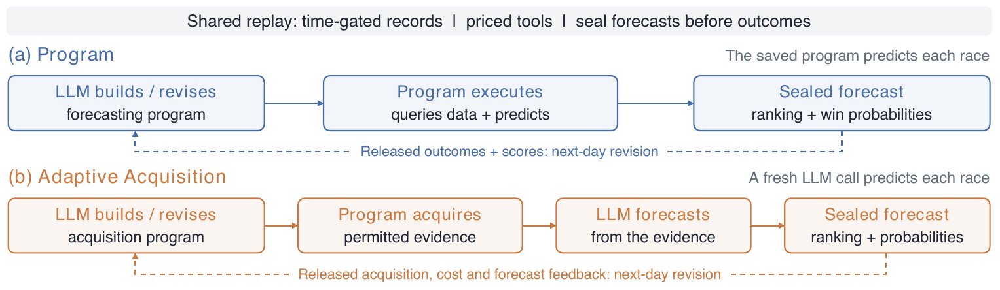

arXiv:2610.19589 · October 2026FORECAST · REVISE · EVALUATE
28Model–scaffold configurations
324Evaluation races
10Shared race days
2Forecasting workflows
01 / THE QUESTION
Beyond a good prediction.
Forecast quality is only one part of an agent’s performance. JockeyBench follows what happens next.
A controlled test of repeated decisions.
JockeyBench places LLM agents in a historical replay of Japanese horse racing. Agents acquire evidence, build forecasting procedures, and revise them as outcomes become available.
Time-gated records, priced tools, and paired frozen-program controls make it possible to examine prediction, adaptation, and resource use separately.
How much predictive signal does the agent recover?
p(x)
02
Resource-adjusted utility
Does the predictive reward justify the research cost?
R − C
03
Decision outcomes
What returns and risks follow a fixed decision rule?
ΔB
THE CENTRAL FINDING
Predictive signal does not ensure profit.
Paper · Figure 1
Selected configuration means under capped-Kelly settlement. Initial bankroll: JPY 100,000; per-race stake cap: 1% of day-start bankroll. All 28 configurations have negative mean profit. Outcomes are retrospective; no live bets were placed.
02 / THE PROTOCOL
Two workflows. One replay clock.
Change where LLM reasoning happens while keeping information cut-offs and outcome release consistent.
PERSIST A PREDICTOR
Build once. Execute each race. Revise each day.
The LLM writes an executable forecasting program. The saved program queries evidence and produces rankings and win probabilities for each race.
↶Released outcomes and scores inform next-day program revision.
Paired frozen control: the same initial program runs on the same races without LLM revision.
View the original workflow figure +

Figure 2 from the paper. Dashed arrows indicate next-day revision after outcomes are released.
DAY d − 1 · 21:00 JST
Race cards released
Evidence becomes available under the historical replay clock.
DAY d · BEFORE RACING
Predictions sealed
Rankings and probabilities are committed before outcomes.
DAY d · 20:30 JST
Outcomes released
Feedback supports reflection and revision for the next day.
THE EVIDENCE ENVIRONMENT
Historical depth. Controlled access.
40,357Races in the cleaned archive
564,224Runner entries
97Whitelisted factual fields
Archive coverage: 2015–2026. Evaluation uses 2024 races. Odds, expert ratings, and future outcomes are excluded from agent inputs. Identities are pseudonymized; external tools and program network access are disabled.
03 / KEY FINDINGS
What changes when we measure the whole process?
Results from the arXiv v1 evaluation, interpreted across shared historical outcomes.
01
Adaptation and final quality are different.
Paired tests identify seven significant revision gains and two declines after Holm correction. The two highest-scoring configurations show no revision gain.
A strong initial predictor can rank highly without improving during evaluation.
02
More LLM calls do not consistently improve decisions.
Across four models, Program has higher mean betting profit and lower research fees than Adaptive Acquisition. Both workflows still lose on average.
Workflow comparisons are descriptive and have unequal trajectory counts.
03
Decision selection changes the probability picture.
Adaptive Acquisition underpredicts mean win frequency across all top picks, yet overpredicts it among Kelly-selected bets for all four models.
Aggregate probability bias can conceal errors on the decisions actually taken.
04
One profitable run is not a reliable strategy.
13 of 138 individual trajectories finish in profit under capped Kelly, while every configuration mean is negative. Profitable runs can rely on concentrated returns.
Repeated executions capture variability on fixed outcomes, not independent temporal replications.
Comparing decision outcomes across workflows
Paper · Figure 3
Dashed lines: Program. Solid lines: Adaptive Acquisition. Official dividends include takeout. Betting P&L excludes synthetic research fees and provider charges.
THE TAKEAWAY
Evaluate predictive competence, adaptation, resource use, and decision value separately.
Raw JRDB records are not distributed. Consult the repository for authorized data reconstruction and the current release scope. This page summarizes arXiv v1; repository results may use a newer evaluation cohort.
CITATION
If you find this work useful
@misc{xie2026jockeybench,
title = {JockeyBench: Evaluating LLM Agents on Horse-Racing Decision-Making},
author = {Zhongwei Xie and Xingsu Li and Jingqiao Yu and Zihao Wang and
Hong ChiTat and Zhaowei Wang and Weizhi Du and Yuxuan Liu and
Huihao Jing and Jiaxin Bai and Yangqiu Song},
year = {2026},
eprint = {2610.19589},
archivePrefix = {arXiv},
primaryClass = {cs.AI},
url = {https://arxiv.org/abs/2610.19589}
}